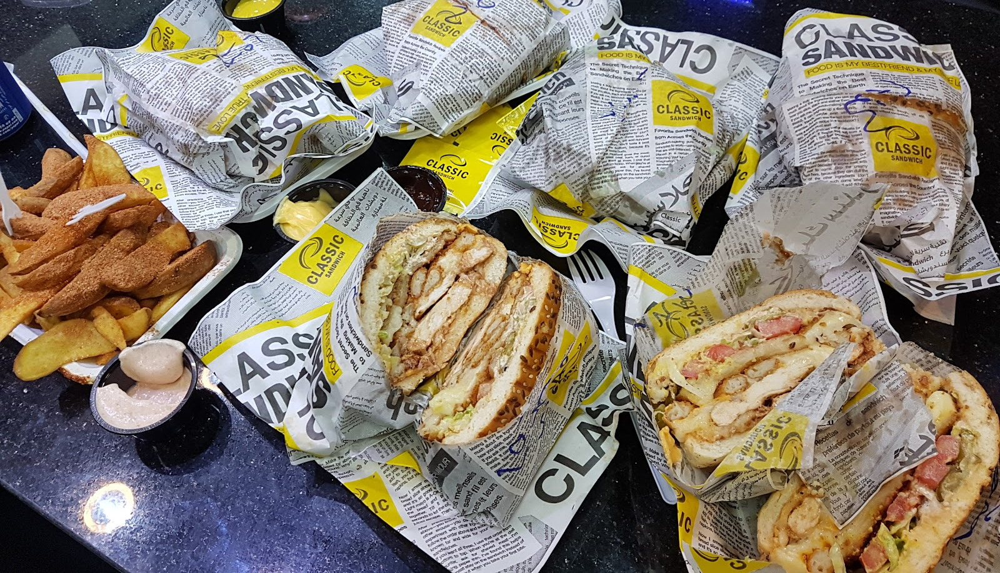
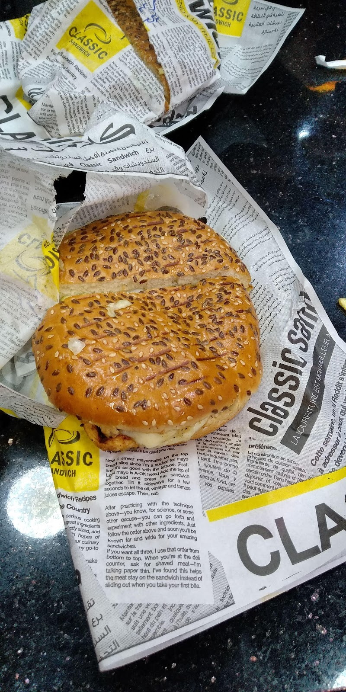
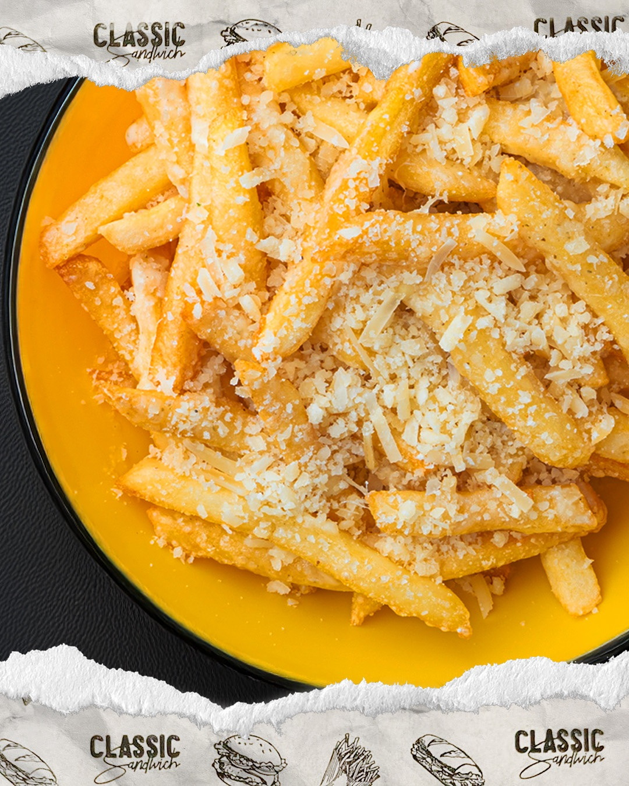
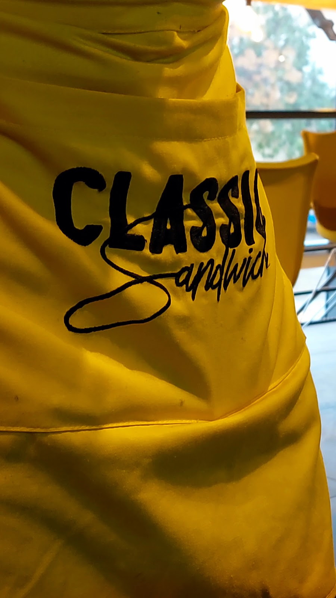
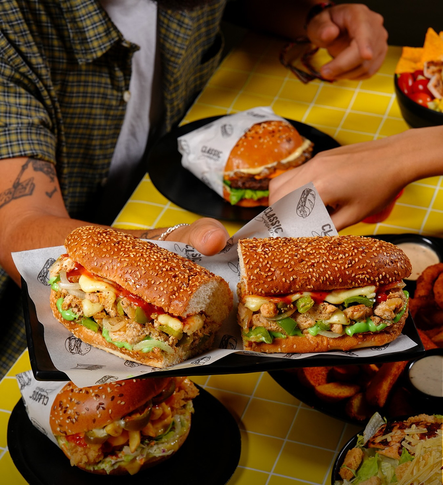
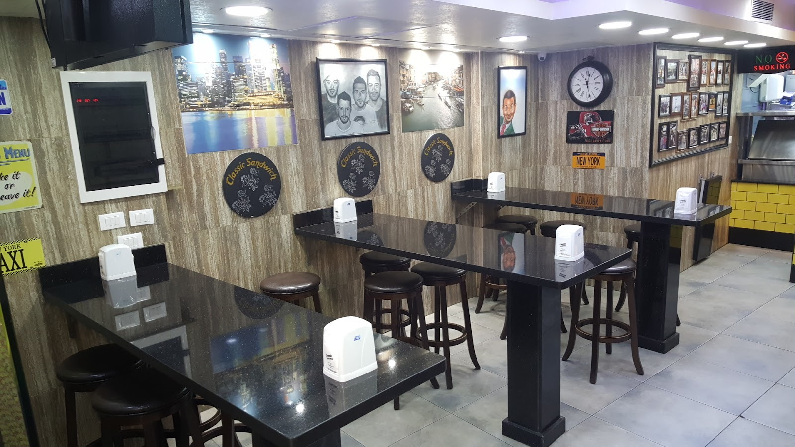

A shop with its own newspaper محل عندو جريدتو الخاصة







A cozy place having lots of delivery bikes, having a swift service. Food arrive on time in very good conditions. Prices are cheap compared to the market and the quality is good. The Julia Chicken burger is really tasty.Wadad Lahad
It was a good experience We ordered mozzarella chicken burger 9/10 Mozzarella beef burger 8/10.Al-Jenan High School
Ahmad El Asaad, Beirut
+961 1 844 778